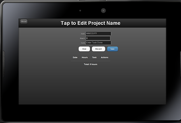

Project Time Tracker


Project Time Tracker is a simple, easy to use application that will allow the user to keep track of time spent on a project. Whether your a field technician, developer, or whatever your needs may be.
The app was originally designed for the new BlackBerry Playbook tablet. It is no longer available on Blackberry App World. It is now available ONLY as a web app for all tablets and smartphones.
You can fork all original source code on GitHub and contribute to making your own version, but I no longer offer support or updates.
Built using HTML5 local storage, CSS3 design elements, Javascript for program code, and jQuery Mobile for UI.